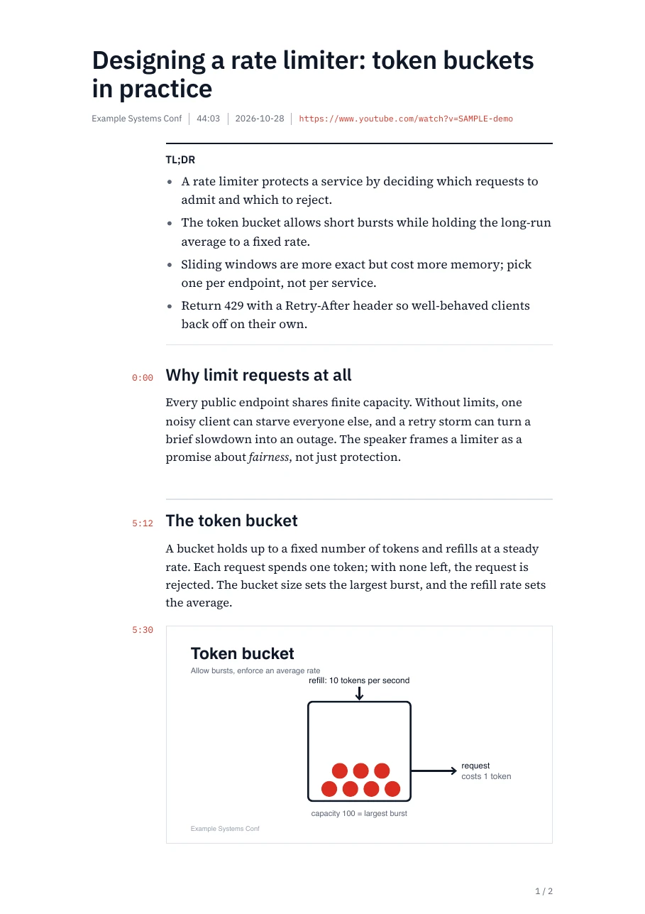

What you get

A TL;DR for the whole video
A few bullets at the top, so you can decide whether the rest is worth your time.
Times that open the video
Every section and screenshot shows its time in the margin. Click one and YouTube opens at that moment.
Screenshots of what was on screen
Slides, diagrams and code are captured where the speaker discusses them. The video is never downloaded in full.
Light by default, for printing. Add --dark for reading on a screen, or --largeText for bigger type.
How it works
It reads the captions.
The transcript comes from YouTube, with a time on every line.
A model writes the guide.
OpenAI, Anthropic, OpenRouter, Nvidia NIM or Google Gemini, with your own key. It rewrites the speech into sections, adds the TL;DR, and picks the moments worth a screenshot.
ffmpeg grabs the frames.
It reads single frames from the video stream at those moments.
Chromium prints the PDF.
Fonts are bundled, so the result looks the same on macOS and Linux. It uses Chrome or Edge if you have one, and otherwise downloads a small headless Chromium once (about 100 MB).
Install
brew install justwaters/tap/yt-pdfNo Homebrew? Use uv tool install "git+https://github.com/justwaters/yt-pdf" instead.
Then add a key once and point it at a video:
yt-pdf auth loginyt-pdf "https://www.youtube.com/watch?v=VIDEO_ID"The PDF is saved next to where you ran it, named after the video.
Good to know
- The video needs captions. Automatic ones count. Without any, there is nothing to read.
- The transcript goes to the model you choose. You bring the key, and free OpenRouter models work for trying it out.
- Screenshots need ffmpeg. Without it you still get the PDF, just with no screenshots.
- Run it from your own machine. YouTube often blocks transcript requests that come from cloud servers.